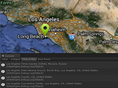

Example of get place predictions from Google Autocomplete API.
Requirement: Google API Key
Usage instructions:
In the script, specify your Google API Key.
Add this script to map GameObject.
In the console, you will see the result of the script.
In the script, specify your Google API Key.
Add this script to map GameObject.
In the console, you will see the result of the script.
FindAutocompleteExample.cs
/* INFINITY CODE 2013-2016 */
/* http://www.infinity-code.com */
using UnityEngine;
namespace InfinityCode.OnlineMapsExamples
{
[AddComponentMenu("Infinity Code/Online Maps/Examples (API Usage)/FindAutocompleteExample")]
public class FindAutocompleteExample : MonoBehaviour
{
private void Start()
{
OnlineMapsFindAutocomplete.Find(
"Los ang",
"" // <----------------------------- Google API Key
).OnComplete += OnComplete;
}
private void OnComplete(string s)
{
OnlineMapsFindAutocompleteResult[] results = OnlineMapsFindAutocomplete.GetResults(s);
if (results == null)
{
Debug.Log("Error");
Debug.Log(s);
return;
}
foreach (OnlineMapsFindAutocompleteResult result in results)
{
Debug.Log(result.description);
}
}
}
}